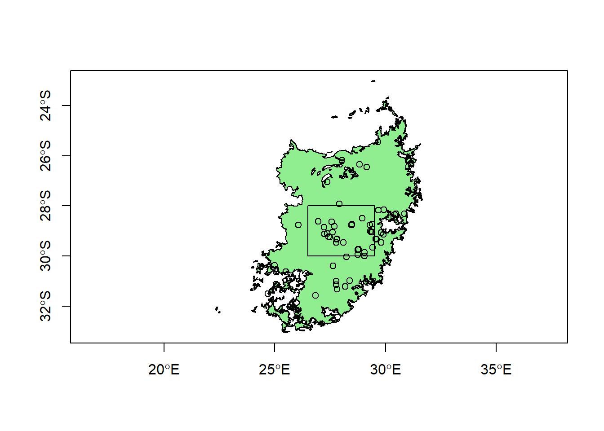

Part 5 Creating sf objects from scratch
5.1 Making spatial data
Lastly, let’s add some data we make ourselves. Let’s say we have a section of grassland we want to use as a study area. To do this, we’re going to make a square polygon using longitude/latitude coordinates. First, we use list and rbind to create a list object with a matrix of coordinate pairs:
#Make polygon list
polygonList = list(rbind(c(26.5, -28), c(29.5, -28), c(29.5, -30), c(26.5, -30), c(26.5, -28)))Next, we trainslate this list into a polygon object with st_polygon, and then a feature collection with st_sfc:
polygonObject<-st_polygon(polygonList)
polygonCollection<-st_sfc(polygonObject)Now we generate some “data” to include. Since it’s only one feature we’re making, we can just give it a feature number of 1. We turn this into a dataframe, and then combine them with the feature collection to make a new simple features dataset with st_sf:
featureNum<-c(1)
data<-data.frame(featureNum)
polygonData<-st_sf(data,polygonCollection)Finally, we need to tell it what coordinate system we are using. The EPSG coordinate system code for the WGS84 Geographic Coordinate System (the standard used in GPS) is 4326. We can assign this easily using st_crs, and use the same function to check it:
st_crs(polygonData) <- 4326
st_crs(polygonData)## Coordinate Reference System:
## User input: EPSG:4326
## wkt:
## GEOGCRS["WGS 84",
## DATUM["World Geodetic System 1984",
## ELLIPSOID["WGS 84",6378137,298.257223563,
## LENGTHUNIT["metre",1]]],
## PRIMEM["Greenwich",0,
## ANGLEUNIT["degree",0.0174532925199433]],
## CS[ellipsoidal,2],
## AXIS["geodetic latitude (Lat)",north,
## ORDER[1],
## ANGLEUNIT["degree",0.0174532925199433]],
## AXIS["geodetic longitude (Lon)",east,
## ORDER[2],
## ANGLEUNIT["degree",0.0174532925199433]],
## USAGE[
## SCOPE["Horizontal component of 3D system."],
## AREA["World."],
## BBOX[-90,-180,90,180]],
## ID["EPSG",4326]]Lastly, we want to plot our newly created study area polygon with our other data:
#Add to plot
plot(st_geometry(grassland),axes=T,col="light green")
plot(st_geometry(c14points2),add=T)
plot(st_geometry(polygonData),add=T)